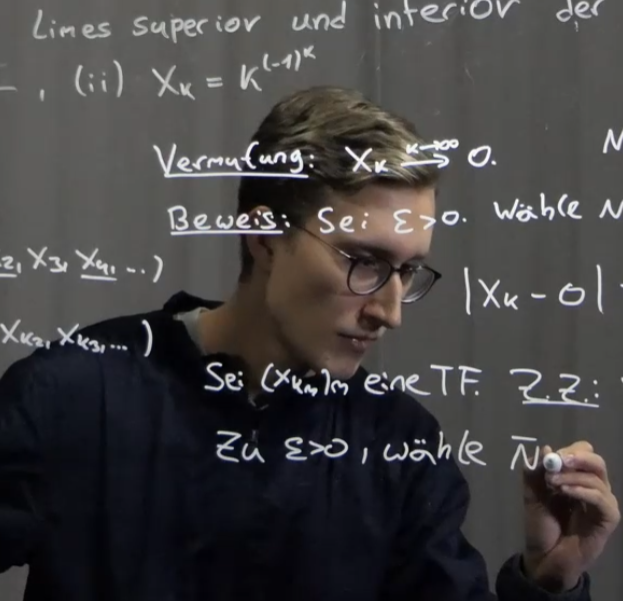

Nichtstandardanalysis
02.08.–11.10.2026
Peter Baumann und Thomas Kirski, Infinitesimalrechnung
AnkündigungsvideoIch studiere Mathematik (M.Sc.) und Philosophie (B.A.) und möchte bald promovieren. Im Moment beschäftigt mich vor allem die Zukunft der Mathematik, insbesondere die Frage, wie sich mathematische Tätigkeitsfelder wandeln und welche neuen Projekte im Rahmen von „Math 2.0“ möglich werden.
Interessen:

Ich organisiere Lesekreise via Discord. Zum Discord-Server.
06.11.2026–?
Tristan Needham, Visual Complex Analysis
Ankündigungsvideo
02.08.–11.10.2026
Peter Baumann und Thomas Kirski, Infinitesimalrechnung
Ankündigungsvideo21.03.–21.06.2026
Marvin J. Greenberg, Euclidean and Non-Euclidean Geometries
AnkündigungsvideoFragen oder Rückmeldungen erreichen mich per E-Mail: anton.steinfadt [at] gmail.com
Bitte ersetze „[at]“ beim Schreiben durch das übliche Zeichen.